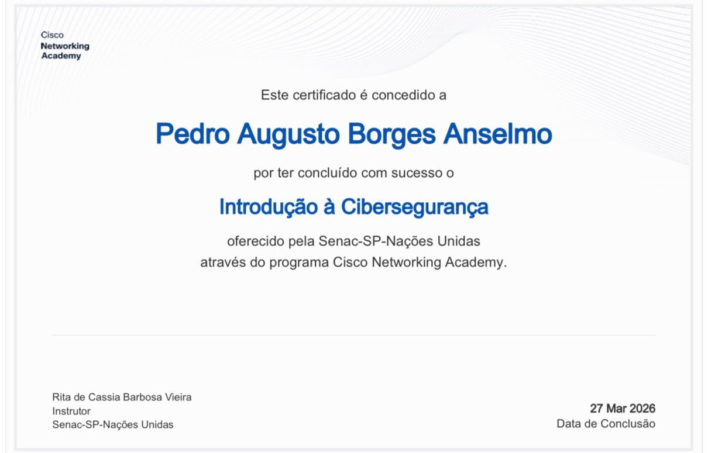
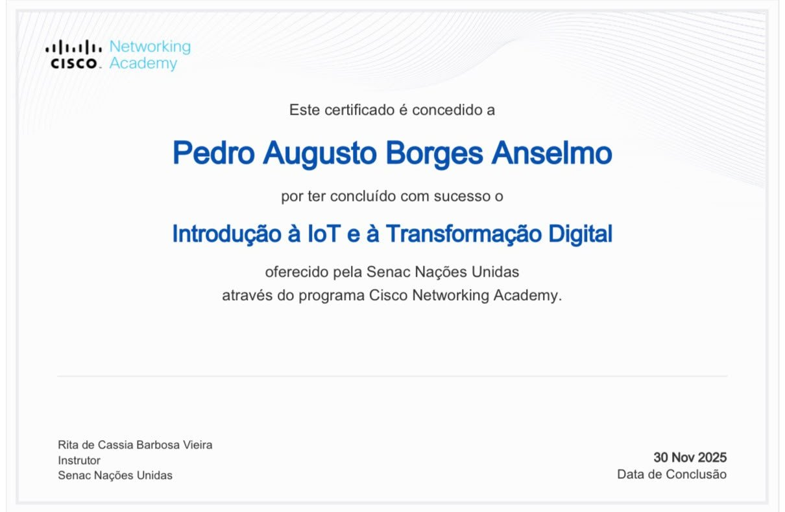
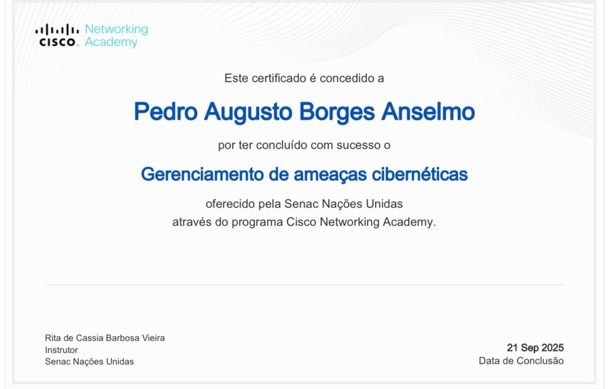
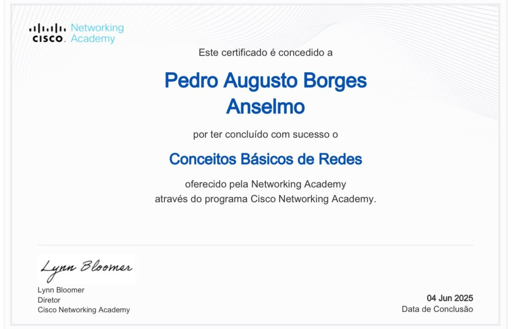
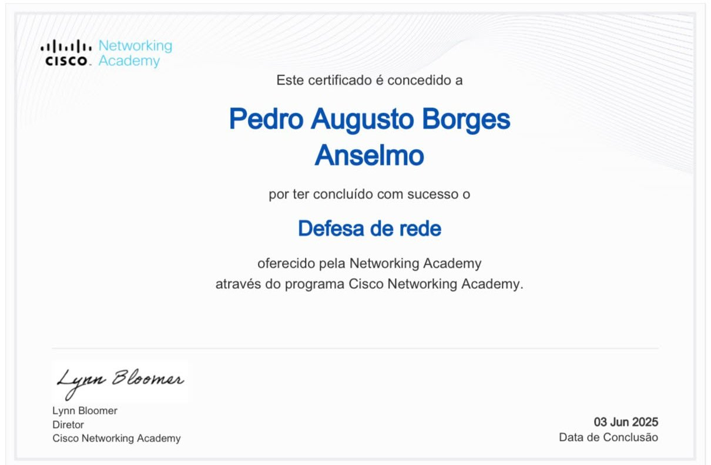

Resumo
Estudante do 3º ano do Ensino Médio Técnico em Internet das Coisas, com cinco certificados da Cisco Networking Academy em IoT, redes e cibersegurança. Tive contato com cabos de rede, dispositivos inteligentes, programação e banco de dados.
Nos trabalhos em grupo, melhorei a comunicação e a responsabilidade. Quero usar o que aprendi de tecnologia na área administrativa.
Objetivo
Construir carreira em Administração, desenvolvendo liderança, organização, comunicação e gestão.
Formação
- Ensino Médio Técnico em Internet das Coisas, Senac Nações Unidas (conclusão prevista em 2026)
Projetos técnicos
- Maquete com LEDs: montagem em grupo com circuito de iluminação.
- Mini Fábrica Inteligente: ESP32, ESP32-CAM e banco de dados.
- Sensor de Ré: Arduino UNO, sensor ultrassônico, LEDs e buzzer para aviso de proximidade.
- Portfólio: site com 29 páginas em HTML, CSS e JavaScript.
Projetos acadêmicos
- Matemática Financeira: análise de situações reais de famílias.
- Estudo de caso do petróleo: papel de cientistas e analistas técnicos.
- Projeto de Lei: proposta escrita em trio.
- Pressão Estética: ciência e informação no caso das canetas emagrecedoras.
- Biografia de Milton Santos: pesquisa e escrita sobre espaço banal.
Visitas técnicas
- Sandvik
- HPE (Hewlett Packard Enterprise)
Competências
Habilidades pessoais
- Trabalho em equipe
- Comunicação e apresentação de projetos
- Responsabilidade
- Criatividade e resolução de problemas
Certificados


Introdução à Cibersegurança
Cisco Networking Academy, concluído em 27/03/2026.


Introdução à IoT e à Transformação Digital
Cisco Networking Academy, concluído em 30/11/2025.


Gerenciamento de Ameaças Cibernéticas
Cisco Networking Academy, concluído em 21/09/2025.


Conceitos Básicos de Redes
Cisco Networking Academy, concluído em 04/06/2025.


Defesa de Rede
Cisco Networking Academy, concluído em 03/06/2025.